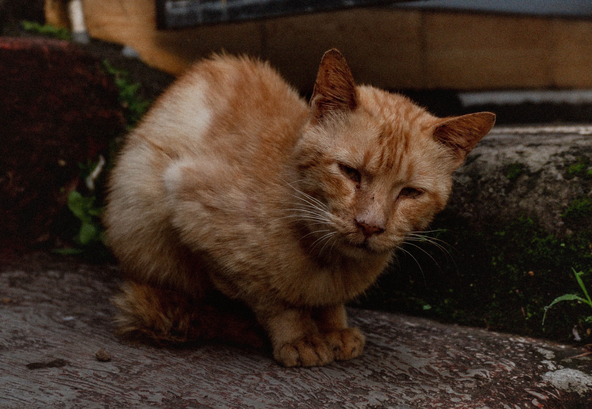

Kitten - Birth to 6 Months

The kitten stage in a cat's life is a period of rapid growth and development, typically spanning from birth to around 6 months of age. During this stage, kittens are incredibly playful, curious, and full of boundless energy. They rely on their mother's milk initially but gradually transition to solid food. Kittens start to learn important social and behavioral skills through interaction with their littermates and human caregivers. This stage is also when they begin to explore their surroundings, sharpen their hunting instincts through play, and establish early bonds with their human companions. As they grow, their personalities start to emerge, setting the foundation for their future adult cat behavior and characteristics. Proper care, nutrition, and socialization during the kitten stage are crucial for ensuring they grow up to be healthy, well-adjusted adults.
Junior - 7 months to 2 years

The junior stage of a cat's life typically spans from 7 months to 2 years old. During this phase, cats continue to grow physically, but the rapid development seen in kittenhood slows down. Their playful and energetic nature remains, and they often display bursts of activity and curiosity. Junior cats become more independent but still seek attention and social interaction. They are in the prime of their learning phase, refining hunting skills, and further solidifying their personalities. This stage is an excellent time to establish routines, reinforce training, and provide ample mental and physical stimulation to nurture a well-adjusted and happy adult cat.
Adult - 3 to 6 years

The adult stage of a cat's life typically spans from 3 to 6 years old. During this phase, cats have reached their full physical maturity and typically maintain a stable size and weight. They tend to exhibit a more settled and predictable behavior compared to their younger years. Adult cats are often less active than kittens and juniors, but they still enjoy play and interaction, albeit at a more measured pace. This stage is characterized by a cat's peak physical health and is an ideal time for maintaining regular veterinary check-ups, a balanced diet, and an enriching environment to ensure a happy and content adult life.
Mature - 7 to 10 years

The mature stage of a cat's life typically spans from 7 to 10 years old. During this phase, cats continue to age gracefully, although there may be subtle signs of slowing down. They often become more relaxed, preferring comfortable lounging spots and shorter play sessions. Some may experience slight changes in health, such as reduced mobility or dental issues, which may require increased veterinary care. Despite these changes, mature cats can still lead active and fulfilling lives with proper care, a balanced diet, and regular vet visits. Their calm and settled demeanor often makes them cherished companions for those seeking a more tranquil feline friend.
Senior - 11 to 14 years

The senior cat stage, typically spanning from 10 to 15 years of age, is a period when cats start to exhibit more noticeable signs of aging. Cats in this stage may experience a decrease in energy and activity levels. They might develop age-related health issues such as arthritis or dental problems, and their grooming habits may change. Regular veterinary check-ups and specialized senior cat diets can help manage these issues and ensure a comfortable and happy senior life. Despite these changes, senior cats often maintain their affectionate nature and can continue to provide companionship and love to their human families for many years.
Super Senior - 15+ years

The super senior stage of a cat's life, which typically begins at 15 years or older, represents a time of graceful aging and a deep bond between the cat and their caregiver. Cats in this stage may exhibit further slowing down, reduced hearing or vision, and may require more attention to their health, including regular veterinary visits and potentially specialized senior cat diets. While their activity levels may decline, their affectionate and loving nature often remains steadfast, offering a sense of comfort and companionship to their human companions. Providing a comfortable and safe environment, as well as extra care and attention, can help ensure a high quality of life for super senior cats as they continue to age with dignity and grace.